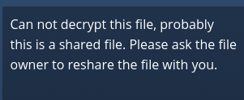

Encryption Configuration¶
ownCloud includes a server-side encryption application. The Encryption app encrypts all files stored on the ownCloud server, and all files on remote storage that is connected to your ownCloud server. Encryption and decryption are performed on the ownCloud server. All files sent to remote storage (for example Dropbox and Google Drive) will be encrypted by the ownCloud server, and upon retrieval, decrypted before serving them to you and anyone you have shared them with.
Encrypting files increases their size by roughly 35%, so you must take this into account when you are provisioning storage and setting storage quotas. User’s quotas are based on the unencrypted file size, and not the encrypted file size.
When files on external storage are encrypted in ownCloud, you cannot share them directly from the external storage services, but only through ownCloud sharing because the key to decrypt the data never leaves the ownCloud server.
The main purpose of the Encryption app is to protect users’ files on remote storage, and to do it easily and seamlessly from within ownCloud.
The Encryption app generates a strong encryption key, which is unlocked by user’s passwords. So your users don’t need to track an extra password, but simply log in as they normally do.
Encryption is applied server-wide; it cannot be applied to selected users or files.
The Encryption app encrypts only the contents of files, and not filenames and folder structures.
You should regularly backup all encryption keys to prevent permanent data loss. The encryption keys are stored in the following folders:
data/owncloud_private_key- Recovery key, if enabled, and public share key
data/public-keys- Public keys for all users
data/<user>/files_encryption- Users’ private keys and all other keys necessary to decrypt the users’ files
data/files_encryption- private keys and all other keys necessary to decrypt the files stored on a system wide external storage
Warning
Encryption keys are stored only on the ownCloud server, eliminating exposure of your data to third party storage providers. The encryption app does not protect your data if your ownCloud server is compromised, and it does not prevent ownCloud administrators from reading user’s files. This would require client-side encryption, which this app does not provide. If your ownCloud server is not connected to any external storage services then it is better to use other encryption tools, such as file-level or whole-disk encryption. Read How ownCloud uses encryption to protect your data for more information.
Enabling the Encryption App¶
The Encryption app is bundled with ownCloud, so first go to your Apps page to enable it.
After you click the Enable button you must log out, and then log back in.
If you continue to work without logging out, you’ll see a yellow banner at
the top of your Files page that warns you “Encryption App is enabled but your
keys are not initialized, please log-out and log-in again.”

When you log out and then log back in, your encryption keys are initialized and your files are encrypted. This is a one-time process, and it will take a few minutes depending on how many files you have.
Note
The more files you have, the longer the initial encryption will take. It is better to activate the encryption app after a new ownCloud installation, to avoid possible timeouts.
When the encryption process is complete you’ll be returned to your default ownCloud page. Every user will go through this process when they log in after you enable encryption, and each user will get unique encryption keys. Users can change their passwords whenever they want on their Personal pages, and ownCloud will update their encryption keys automatically.
Sharing Encrypted Files¶
Only users who have private encryption keys have access to shared encrypted files and folders. Users who have not yet created their private encryption keys will not have access to encrypted shared files; they will see folders and filenames, but will not be able to open or download the files. They will see a yellow warning banner that says “Encryption App is enabled but your keys are not initialized, please log-out and log-in again.”
Share owners may need to re-share files after encryption is enabled; users trying to access the share will see a message advising them to ask the share owner to re-share the file with them. For individual shares, un-share and re-share the file. For group shares, share with any individuals who can’t access the share. This updates the encryption, and then the share owner can remove the individual shares.

Decrypting Encrypted Files¶
You have the option of changing your mind and disabling the Encryption app. Just click its Disable button on the Apps page, and when you go to your Files page you’ll see the yellow banner warning “Encryption was disabled but your files are still encrypted. Please go to your personal settings to decrypt your files”.
Go to your Personal page and enter your password in the Encryption removal form, and your files will all be decrypted.
Your users will also have to follow this step to decrypt their files. If
something goes wrong with decryption, click the Restore Encryption Keys
button to re-encrypt your files, and then review your logfile to see what
happened.
Enabling a File Recovery Key¶
If you lose your ownCloud password, then you lose access to your encrypted files. If one of your users loses their ownCloud password their files are unrecoverable. You cannot reset their password in the normal way; you’ll see a yellow banner warning “Please provide an admin recovery password, otherwise all user data will be lost”.
To avoid all this, create a Recovery Key. Go to the Encryption section of your Admin page and set a recovery key password.

Then your users have the option of enabling password recovery on their Personal pages. If they do not do this, then the Recovery Key won’t work for them.

For users who have enabled password recovery, give them a new password and recover access to their encrypted files by supplying the Recovery Key on the Users page.
Files Not Encrypted¶
Only the data in your files is encrypted, and not the filenames or folder structures. These files are never encrypted:
- Old files in the trash bin.
- Image thumbnails from the Gallery app.
- Previews from the Files app.
- The search index from the full text search app.
- Third-party app data
There may be other files that are not encrypted; only files that are exposed to third-party storage providers are guaranteed to be encrypted.
LDAP and Other External User Back-ends¶
If you use an external user back-end, such as an LDAP or Samba server, and you change a user’s password on the back-end, the user will be prompted to change their ownCloud login to match on their next ownCloud login. The user will need both their old and new passwords to do this. If you have enabled the Recovery Key then you can change a user’s password in the ownCloud Users panel to match their back-end password, and then, of course, notify the user and give them their new password.
Encryption migration to ownCloud 8.0¶
When you upgrade from older versions of ownCloud to ownCloud 8.0, you must manually migrate your encryption keys with the occ command after the upgrade is complete, like this example for CentOS: sudo -u apache php occ encryption:migrate-keys You must run occ as your HTTP user. See Using the occ Command to learn more about occ.